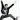

| 2012/10 18 Thu | 264回目*marika |
いつも読んでくださってる方、
初めて読んでくださった方、
コメントしてくださった方、
ありがとうございます。
でーん

今日は長野イベントのリハが
ありましたー
 雨すごいね。
雨すごいね。
雨すごいね。
メンバーのブログに
いっぱい写り込んでるよ。(たぶん)
*****HaPPy BirThDAy*****
あみ♡2012.10.18
あみはねー、
いると顔近づけちゃうんだよね♪
あみの目きれい！
ちーむNが話してるときに
私もふざけて割り込んで入ったら
あすか「はーいどーしたのかなー棒」
ちはる「んー何かなー棒」
あみ「で？？？？」
こんな感じ笑
ちーむNの一体感すごい

文じゃ表現できない笑
あみの舞台やライブでの表現力は
いつも見ててすごいなぁって思う。
本当いっつもおもしろい。
急にちゅうしてくるんだよ？！
噛んでくるんだよ？！
意味わからんけどそこがすき笑
最初の頃こんな子だったなんて
全く思わなかったなぁ。
なんだかんだかまってくれて
ありがとう

あみだいすきっ

またあみのマヨビーム見たいな

.........
毎日 涙がまだ悲しみだった頃
聴いてる。このメロディすき！
音が出ないギターも聴いてる！
...は！
めっちゃ乃木坂聴いてる
 ‼
‼
‼
ちなみに今はサカナクション
聴いてるよ


度入りメガネぐしゃり
絆創膏外して普通に指使ってたら
またピリピリ痛くなってきた。
やっかいなやつ！！！！けっ
勉強しますー

まりか
コメント(217)
2012/10/18 22:36